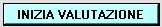
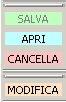
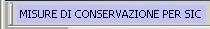
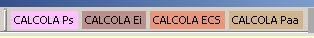
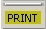

Il
pannello di valutazione e' suddiviso in due parti: l'area dove
sono presenti i pulsanti per accedere a diverse funzionalita'del
programma e l'area dove si trova il pannello attivita' in cui vengono
registrate le scelte dell'utente durante la valutazione d'incidenza
Per avviare una valutazione d'incidenza e aprire il primo quadro bisogna premere il pulsante "inizia valutazione"

1 Menu' edit

Salva: viene salvato il contenuto del pannello di attivita'
Apri: viene aperto il testo di una precedente valutazione all'interno del pannello di valutazione
Cancella: viene cancellato tutto il testo presente nel pannello di attivita'
Modifica: e' possibile modificare il testo presente nel pannello di attivita'
2 Menu' misure di conservazione

Premendo il pulsante si apre il pannello per la consultazione delle misure di conservalione del/dei SIC in esame
3 Menu' calcoli

Premendo i pulsanti si aprono i pannelli per il calcolo degli indicatori
4 Menu' print

Premendo il pulsante si puo' stampare il testo presente nel pannello di attivita'